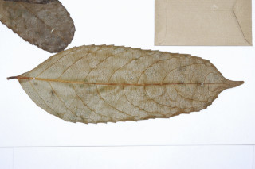
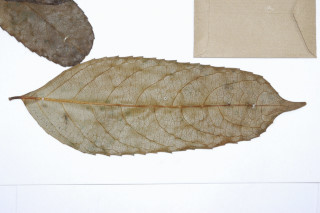

Images :
 


| Habit : | Trees ca. 20 m tall. |
| Leaves : | Leaves simple , alternate , spiral ; petiole 0.5-0.9 cm, glabrous ; lamina 8-19 x 3.5-6 cm, oblong to elliptic , apex acuminate , base oblique , margin sharply denticulate when young and subcrenate when mature, coriaceous , glossy , glabrous ; midrib raised above; secondary_nerves ca. 7 pairs, prominent; tertiary_nerves distantly percurrent . |
| Inflorescence / Flower : | Inflorescence axillary and ramiflorus . |
| Fruit and Seed : | Drupe . |